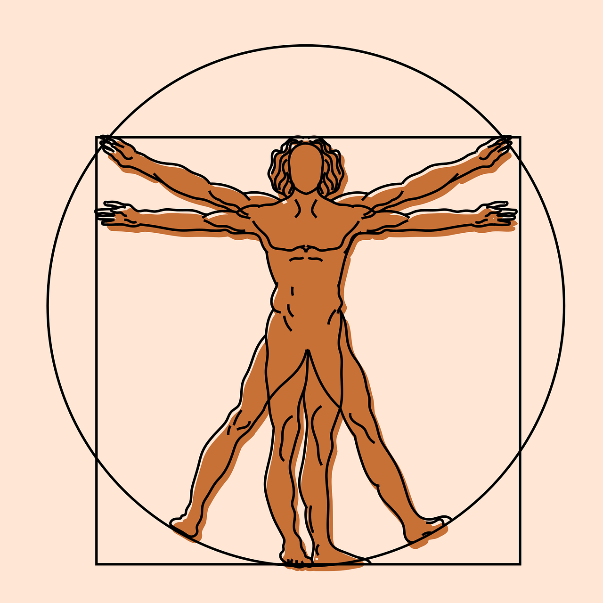

Imagine HTML is the skeleton. It forms the structure of your webpage. Then imagine CSS is the outer body, making your page look how it should, adding the visual elements to make it stand out, such as eye and hair colour. Then imagine Javascript as the muscles and heart, controlling your movements and keeping your blood pumping around your body and making sure you carry out your daily functions as a human being... and webpage!
Control Flow in Javascript is how your computer runs code from top to bottom. Generally code is read from top line to bottom line unless there is a loop, function or conditional statement that changes the order of the flow as new insutructions need to be carried out before the original code can continue to flow.
Think of this in terms of an everyday task such as feeding the dog. First, you got to the cupboard, get out the dog food, put the food in the dogs bowl (while giving him a pat for being the goodest boy!), tell him he can eat and then open the cupboard again to put the food away. Normally there wouldn't be any change to this sequence. Unless you go to the cupboard and there isn't any dog food! Then a loop would come into play as you'd need to add another set of instructions to purchase more dog food. Once you have completed this loop (brought more dog food) then you can continue in the sequence or 'control flow'.